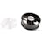

Things used in this project
Hardware components |
|

|
Cypress PSoC 4 Prototyping Kit |

|
SG90 Micro-servo motor |
| DFRobot Fermion: Voice Recorder Module (Breakout) | |
| Seeed Studio Grove - OLED Display 1.12'' V2 | |
| DFRobot Stereo Enclosed Speaker - 3W 8Ω | |
| Seeed Studio Grove - Vibration Motor | |
| Texas Instruments BOOSTXL-ULN2003 ULN2003A Dual Stepper Motor BoosterPack | |
| Laser Diode, Visible | |
|  | Axial Fan, 10" Exhaust |
| DFRobot Water Pump | |
| Hair Dryer 2000W Generic | |
| Plastic Portable Commode | |
| Flexible Pipes | |
Software apps and online services |
|
| Cypress PSoC Creator | |
Hand tools and fabrication machines |
|

|
Soldering iron (generic) |
Story
Introduction
Cap Sense touch-based user interface redefines user's interaction with tools and objects, making them more intuitive and user friendly to use. Here in this project, I am trying to develop a demo for Cap Sense based human-machine-interface that will upgrade the existing medical/portable commode with more options for the patients or users with visual/limited movement disabilities.
Caregivers can also operate this device and make their work a bit easier.
Features
- 1. Aimed washing control
- 2. Adjustable water flow control
- 3. Privacy Mode with White Noise
- 4. Hot Air Dryer
- 5. Anti Numb Massage
- 6. Odor Extraction Fan
- 7. Indication LED and OLED Display for feedback to user (In Button LED)
This is how the final prototype looks like :
Touch based HMI Controller made with Infineon PSoC 4 CapSense technology :
Demonstration Video
Hardware Build/Assembly
Everything is electrically connected according to the following Schematic :

PSoC 4 Microcontroller
CY8C4245AXI-483 is an ARM Cortex M0 microcontroller with 32 KB Flash, 4 KB RAM, max operating frequency 48 MHz with 36 GPIOs.
This little microcontroller from Infineon (originally from Cypress) is a powerhouse with lots of interesting features compared to most generic microcontrollers. IDAC, CapSense, Programmable Logic are 3 of its unique features.
This PSoC4 chip is still active and preferred for production design.
CapSense TouchInterface (Trackpad/Slider/Button)
CapSense Touch Interface is made of electrodes which are just exposed metal pads with certain patterns and shapes at first sight, but there is more going on under the hood.
(See reference section: CapSense Touch Interface design guide for details)
The size and spacing of the capacitive sensor are equally important to the sensor's performance. In addition to the size of the sensor, and its spacing relative to the ground plane, the type of ground plane used is very important. Since the parasitic capacitance of the sensor is related to the electric field's (e-field) path to the ground, it is important to choose a ground plane that limits the concentration of e-field lines with no conductive object present.
Source: https://en.wikipedia.org/wiki/Capacitive_sensing (Wikipedia)
I made my own CapSense sensors on an FR4 protoboard & it looks like this:
It is made with copper tape, copper wire strand and lots of soldering wire.
Hatch Ground
Hatch patterned ground helps to isolate each sensor from its surrounding traces and confine the sensor's electric field into a close area.
I have made this flexible hatch ground with packaging tape and copper wire strands. It will enclose the whole circuit except the places where the CapSense electrodes are exposed to overlay (plastic enclosure top).
Nevertheless, Infineon's CapSense Technology is very robust, hence sensing may work even without hatch ground (at least it worked without hatch ground in my setup). Still, production design must use proper ground hatch for long term reliability.
Plastic Enclosure &Overlay
It was one of those moments, I wish I had a 3D printer to make a proper enclosure. Since, that is not the case, I had to improvise and turn a wristwatch box into the enclosure and overlay for these CapSense electrodes.
This box is made of ABS plastic, the overlay is 2mm thick plastic and it worked perfectly. I have dented 6 holes for LED indication lights and cutout for the OLED display.
OLED Display
This 1306 I2C 128x32 pixel display will show different confirmation messages to the user, as CapSense activity is detected, it will show up the latest mode info that was activated.
In-Button Indication LED
There are 6 LEDs, 1 Green, 2 Red and 3 Blue, right in the center of each touch button. These LEDs toggle every time their corresponding touch button is touched.
If an LED is glowing, it means the function attached to that button is active.
Servo Motors
There are two servo motors mounted on a Pan-and-Tilt-bracket mechanical device, which enables angular and rotational movements.
A washing spray nozzle is mounted on this setup, user can use the CapSense Trackpad to aim at different regions for cleaning (please don't imagine it).
Movement left-right on the trackpad will control the pan and up-down will control the tilt.
Vibration Motors
There are 4 vibration motors installed under the seat cover of the commode in parallel, along with 4 dot lasers (for visual indication)
When the anti-numb massage mode is activated by the user from the touch interface, these motors will vibrate and help user to counter numbness.
Some patients need to sit longer to get things done, as the duration will vary according to each patients' health condition, hence this feature will ease their discomfort and numbness.
SprayPump Motor
The job of this pump is to spray water for washing, driven by a PWM signal to control the water flow rate.
The user needs to provide input on the CapSense Slider, which will control the duty cycle of the PWM signal that drives the pump motor. ULN2803 driver chip is used to interface mcu with pump motor.
Audio Playback Module
One of the biggest concerns with users of a medical commode is privacy, since they are responding to the 'call of nature' in an open environment.
Best way to block unwanted sounds is to use white noise to mask them. In this case, sounds such as rain/thunder sound, flowing water sound or static noise are used to enhance the experience.
One tap on the CapSense Button associated to triggering Privacy Mode, the sound masking screen will be activated.
Hair Dryer
Ideally, the final product should have a custom hot air dryer solution but for demonstration purposes, I am using Hair Dryer to show this feature.
The hot air temperature profile is suitable for human body application for short period. This feature will help reduce fungal infections in patients.
Exhaust Fan
Unpleasant odor is a serious privacy concern for the patients and severely discomfortable experience for others.
Typical exhaust fans remove the odor from the rooms atmosphere. But this solution removes odor both from the room and right from the spot.
It is vital to connect a duct pipe on the outlet of the exhaust fan but reason for not being able to shown is, I couldn't find the right size pipe for that.
Relay Module
There are two relay modules inside the AC socket box, just typical relays which will take logic level inputs, activate the coils, latch power to the load.
Whenever the user touches the correct CapSense buttons, the PSoC mcu will put logic high on the GPIOs which are connected to the signal inputs of the relays, activating them and powering up AC loads.
Power Supply
Clean power supply (minimum ripple, less noise) is very important for CapSense sensitivity. I have observed that when the project is powered from cleaner DC source like Battery or Solar, the touch sensitivity increases compared to powering from an wall adapter. I have used a 5V DC phone adapter to power this demo.
Wiring and Plumbing
There are the 3 holes inside the commode chamber:
- To supply water for aimed (by 2 servos) spraying system
- To remove odor (from the spot) by creating partial vacuum with exhaust fan
- To supply hot air from air heater (dryer) to for drying
The wiring and plumbing is bit of a mess:-
But this also demonstrates how solid performing the CapSense Technology from Infineon is ! It works under the worst case scenario !
With proper wiring, plumbing, shielding and layout design, the system performance can be much more stable, robust and reliable for longer operation.
PSoC4 Creator IDE: Device Configurations
PSoC Creator is an interesting IDE to develop CapSense solutions with PSoC 4 devices (e.g. CY8C4245AXI-483)
FirmwareDevelopment workflow in PSoC Creator can be segmented into 3 interconnected sections :
- 1. TopDesign.cysch
- 2. <Project_name>.cydwr
- 3. main.c
TopDesign.cysch is the drag and drop schematic interface to pick hardware blocks and configure them, even add programmable logic and modify internal hardware routing as needed
From the component catalog , all the required components like CapSense, PWM, GPIO, I2C can be placed on the TopDesign.cysch page
On the <ProjectName>.cydwr tab, developer needs to assign GPIOs/real physical pins of the mcu and map them with the hardware blocks in cysch
After configuring these two segments, building the project will generate the necessary APIs (functions) for all the hardware component , the API names will depend on how the components were named first.
In the main.c, code is written using these generated APIs , then compiled, flashed, debugged and modified/repeated , until the desired results are achieved.
Each component placed on TopDesig, cysch needs to be configured properly by clicking on them and providing required settings/parameters/values for them.
Configuring PSoCComponents
Bootloadable
This Bootloadable component allows the MCU to be reprogrammed/flashed through a simple UART interface, no dedicated programmer/debugger is required.
By linking UART_Bootloader.hex file in this component, necessary start-up instructions are put at the beginning of program memory , allowing reprogramming of the application.
During startup of power cycle if Pin 0_7 is pulled down to Gnd, the PSoC chip/mcu will execute the bootloader code and enter bootloader mode. In this mode Blue LED on Pin 1_6 keep flashing a 1 Hz and ready to accept latest application code flashing through UART.
If Pin 0_7 is not pulled down during start up/restart/power cycling, mcu will not enter bootloader mode but directly run the actual application code.
CapSense
CapSense component is the core component for enabling CapSensing features on PSoC chip. In the Basic tab by clicking on the "+" different types of CapSensing interfaces like Touchpad/Slider/Buttons can be added to the program.
Note that, each interface will occupy certain number of GPIO pins depending on their configuration.
Here is how I configured the CapSense for this project :-
- Touchpad with 3 Columns and 4 Rows, that will need total 7 GPIOs/pins
- Linear Slider with 3 segments which will require 3 more GPIOs/pins
- 6 Touch Buttons each will need 1 pins, total 6 GPIOs for 6 Buttons
All the cap sensing elements are configured for self-capacitance mode with smart sense(hardware parameter) tuning . This allows selecting a finger-capacitance threshold as low as 0.02 pF , which enables the use of thick plastic overlay (a few mm thick) on top of cap sense electrodes.
Physical pins for these CapSense electrodes are assigned on the CYDWR tab as follows :
I2COLED
I2C OLED is an I2C component configured to drive 1306 OLED display in Master mode @ 100kbps speed.
I am using the following library from GitHub to drive the OLED Module:
https://github.com/derkst/Cypress-PSOC-OLED
The I2C component is very old, so it is necessary to update the component to get it working on PSoC Creator 4.4. The library is a port of Adafruit_GFX library.
Updating I2C OLED component
To update the I2C OLED component, from PSoC Creator menu :
project > update component
Then select Next , some download will happen and the components will be updated to the latest version.
ServoControlPWM
To control 2 servo motors two separate PWM modules are configured to generate 50 Hz square wave pulse control signal, enabling independent and simultaneous position control.
Servo position is controlled by varying duty cycle of the PWM signals between 5% to 10%.
This is done by varying the Compare Register values on the fly depending on the user's finger position on the CapSense touchpad .
Changing the Value of Period between "1 to 65535", will vary the PWM Frequency.
Changing the Value of Compare between "1 to Period Value", will vary the Duty Cycle.
Formula
Period = Clock / (2 X Desired Frequency )
Compare = Period - ( Desired Duty X Period )
Calculating Frequency and Duty Cycle
Here, Clock speed for the PWM Component is chosen 480 kHz,
To generate a PWM signal of 50 Hz (Desired Frequency )
Period Register value will be, 480000 / ( 2 X 50 ) = 4800
Compare Register (min) value will be, 4800 - ( 10% X 4800 ) = 4320
Compare Register (max) value will be, 4800 - ( 5% X 4800 ) = 4560
By varying the Compare Register value between 4320 to 4560, the servo motor position can be controlled, because it will generate the desired signal with right duty cycle and frequency
PWMModuleClock:
Clock component will generate user configurable clock signal for PWM module.
Changing the Value of Clock signal to PWM component, will vary the Frequency range. The faster the clock, the higher is the max frequency.
ServoDrivePWMOutput:
The PWM signal produced from PWM module is diverted to a Output pin to bring out the signal from the chip. This output pin is driven by the PWM module (i.e hardware driven), so they must be connected or wired in cysch and hardware connection needs to be enabled in configuration.
The output signal is digital type and drive mode is selected to be strong drive .
LEDsandExternalDevicesDriveOutputs:
To drive 6 status LEDs and 4 external loads, total 10 GPIOs are configures as digital output with strong drive.
Since, these pins are controlled from firmware directly (i.e. purely software driven), HW connection is unchecked in the configuration settings.
Writing Firmware and Programming
In PSoC Creator IDE, firmware or code can be written on the main.c file after all the hardware block/components are configured properly and the project is build.
Build > (project name)
Because building the project will generate necessary APIs or functions to control the hardware blocks like CapSense, PWM, GPIO etc. API documentations can be found by clicking on each component and opening their respective datasheets.
Once the firmware is written, it can be flashed on the PSoC chip or mcu using bootloader host application.
Find the your_project_name.cyacd file from bootloader host and select it, then set baud rate 11500 and click the program icon to flash the firmware

cyacd file location: C:\Users\(Your Computer Name)\(Your Project Location)\(Your Project Directory Name)\CortexM0\ARM_GCC_541\Debug
I am using HC-05 module to wirelessly program the PSoC 4 mcu, because it saves the trouble of connecting the microcontroller to PC USB again and again for bug fixing and updating the firmware.
Please check out my other project on how to do it Wireless PSoC Programming in details :
https://www.hackster.io/PSoC_Rocks/psoc-4-wireless-programming-496f60
Conclusion
This project is a demonstration of Infineon CapSense technology, it's not necessarily a demo for advanced medical commode. The purpose of this project is to showcase CapSense technology, which can improve an existing object or tools.
This design is far from a finished product, more work needs to be done to improve it. This is as far as I can do myself by 'making something' at home with limited budget, time and skill.
References
Schematics
sch int